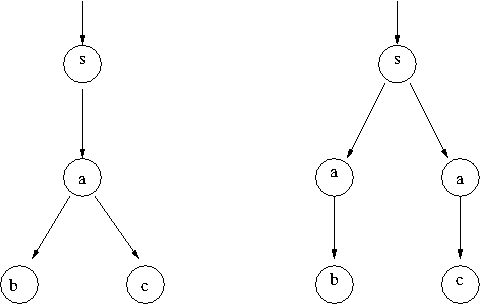

Uli Fahrenberg, Inria. ulrich.fahrenberg@inria.fr
Fifth lecture
Tuesday 8 April 2014, 8:00 to 10:00
Accessible online at: http://is.gd/4Fc29o
We will install and use a different model checker today, NuSMV. This is because NuSMV supports (both LTL and) CTL, whereas Spin only understands LTL.
- NuSMV can be found at http://nusmv.fbk.eu/.
- Take some time to look around.
- Download NuSMV from http://nusmv.fbk.eu/bin/bin_download2-v2.cgi and unpack the archive.
- There's a good tutorial at http://nusmv.fbk.eu/NuSMV/tutorial/v25/tutorial.pdf which you can have a look at.
- Our first simple example is in process.smv. This is a simple transition system, modeling a process which receives
requests that put it into busy state.
- Download process.smv to the
bin directory of NuSMV and start NuSMV in a terminal with ./NuSMV -int process.smv. This starts NuSMV in interactive mode.
- In the NuSMV prompt, write first
go and then pick_state -r. This tells NuSMV to choose, at random, one of the initial states. (We have only one initial state, so this is not very random in our case...) Now tell NuSMV to print_current_state -v, which (surprise!) prints the current state. Do a 5-step random simulation by simulate -r -k 5 and show the trace using show_traces -v . Then prolong your random trace by running simulate -r -k 5 again and have another look at it with show_traces -v .
The file nusmv-session.txt shows how your session should look like.
- Experiment some more if you wish (Section 3.2 in the tutorial can give some inspiration). Use
quit to exit the interactive NuSMV session.
- Next we look at a semaphore model: semaphore.smv.
- Have a look at the model and see that you understand what is going on.
- Open the model in an interactive NuSMV session and do a simulation to see whether it looks to behave in the way it's supposed to. (You'll need at least 10 steps in your simulation to see anything interesting.).
- We need to model check the semaphore program, and we'll use CTL. Add the two following lines to the semaphore program:
SPEC AG ! (proc1.state = critical & proc2.state = critical)
SPEC AG (proc1.state = entering -> AF proc1.state = critical)
Which properties do they express?
- Model check your semaphore program with the command
NuSMV semaphore.smv . Have a careful look at the output trace to understand why the second property is not true.
- Implement Peterson's algorithm and the Bakery algorithm (see lecture 2) in NuSMV and model check them using CTL.
Homework

- Above you see two transition systems with states labeled
s, a, b and c. Implement both in NuSMV.
- Is there an LTL property which differentiates the two? That is, an LTL property F such that F holds for one of the systems, but not for the other?
- Find a CTL property which differentiates the two transition systems. Verify your claim.
I accept answers in French, English, German and Danish. Deadline is 15 April 8:00 Paris time.